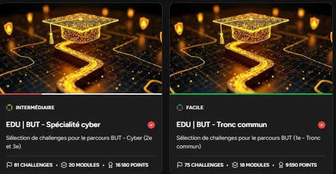

Découvrir le pentesting
Mise en œuvre d'une démarche complète de test d'intrusion éthique : reconnaissance, recherche de vulnérabilités et exploitation contrôlée, dans le respect du cadre légal.
- Cadre
- BUT R&T - parcours Cyber
- Équipe
- Individuel
- Plateforme
- Root-Me Pro
- Livrables
- Write-ups
01En résumé
Objectif
Acquérir la méthodologie du pentest, de la collecte d'informations à l'exploitation, sur des cibles autorisées.
Ma contribution
Réalisation des modules Root-Me du parcours BUT et rédaction de write-ups documentant commandes, résultats et analyses.
Résultat
Parcours tronc commun terminé à 100 % (18 modules, 75 challenges) ; parcours spécialité cyber engagé.
02Le projet
Le professionnel R&T spécialisé en cybersécurité doit collecter et exploiter le maximum d'informations sur le système d'information qu'il protège. Il utilise tous les moyens à sa disposition (techniques, ingénierie sociale, recherche en sources ouvertes) tout en respectant une approche éthique conforme à la réglementation (RGPD, loi Godfrain) et à la charte informatique de l'entreprise.
Le projet suit les sept phases de la Cyber Kill Chain : reconnaissance, armement, livraison, exploitation, installation, commande & contrôle, actions sur l'objectif.
03Progression Root-Me
EDU - BUT tronc commun
- 9 590points
- 100 %avancement
- 18modules
- 75challenges
EDU - BUT spécialité cyber
- 2 580points
- 26 %avancement
- 5modules
- 21challenges
Modules validés notamment : injection SQL, HTTP, AWS, Modbus, analyse PCAP, MQTT, cryptanalyse, BLE, file upload, API, élévation de privilèges Linux, reconnaissance Active Directory.
04Démarche
- Reconnaissance : Compréhension de la surface d'attaque, divisé entre passive et active.
- Armement/Préparation : Préparation des outils pour l'attaque.
- Accès Initial : Exploitation de la surface d'attaque, par exemple une injection SQL sur un site web ou un CVE noyau sur un système Linux.
- Enumération : énumeration des privilèges, processus, capacités, fichiers, services interne, variables d'environnements, d'identité.
- Escalation des privilèges : Accès à des niveaux de privilèges plus élevés.
- Persistance : Persistance (services, cron, tâches planifiées).
- Commande & contrôle : reverse shell, session Meterpreter.
- Actions sur l'objectif : extraction de mots de passe, énumération, pivot réseau.
05Technologies
- Nmap
- Scan de ports, détection d'OS, services et versions
- Metasploit
- Exploitation, reverse shell, post-exploitation
- Hydra / Ncrack
- Attaques par dictionnaire et force brute
- SQLmap
- Injection SQL automatisée
- Burp Suite
- Interception et modification de requêtes HTTP
- SET
- Hameçonnage, clonage de sites, documents piégés
- Aircrack-ng
- Analyse et cassage de clés Wi-Fi WPA/WPA2
- Hashcat / John
- Cassage de mots de passe hors ligne
06Galerie

07Compétences BUT mobilisées (Apprentissage Critique)
AC24.01CyberConnaître et utiliser les bonnes pratiques et les recommandations de
cybersécurité
Application d'une démarche éthique et légale tout au long du parcours : périmètre d'intervention limité aux cibles autorisées (Root-Me Pro), respect du RGPD et de la loi Godfrain, et rédaction des write-ups dans une logique de documentation.
AC24.05CyberConnaître les différents types d'attaque
Identification et exploitation contrôlée d'un large spectre d'attaques : injection SQL, XSS, file upload, élévation de privilèges Linux, analyse PCAP, cryptanalyse, attaques Wi-Fi (WPA/WPA2), reconnaissance Active Directory, attaques sur protocoles industriels (Modbus) et IoT (MQTT, BLE).
AC24.06CyberComprendre des documents techniques en anglais
Lecture de CVE, d'avis de sécurité, de documentations d'outils (Nmap, Metasploit, SQLmap, Burp Suite) et de write-ups internationaux en anglais pour préparer et exécuter les challenges, ainsi que pour rédiger mes propres write-ups.
AC25.01CyberAdministrer les protections contre les logiciels malveillants
Compréhension des mécanismes de persistance et de post-exploitation (reverse shell, session Meterpreter, tâches planifiées, cron) afin d'identifier les vecteurs d'infection et les points de contrôle à surveiller côté défense. Réflexion sur les contre-mesures associées aux attaques étudiées (filtrage, durcissement, détection).
AC25.02CyberPrendre en main des outils de test de pénétration réseau/système
Mise en œuvre d'une boîte à outils complète de pentest : Nmap (scan de ports et détection), Metasploit et msfvenom (exploitation, reverse shell), Hydra (force brute), SQLmap (injection SQL), Burp Suite (interception HTTP), SET (ingénierie sociale), Aircrack-ng (Wi-Fi) et Hashcat/John (cassage hors ligne).
08Bilan
Ce que j'en retiens
La méthodologie du pentest de la reconnaissance au rapport, la prise en main des outils essentiels (Nmap, Metasploit, Hydra, SQLmap, Burp Suite) et la compréhension des mécanismes de vulnérabilités comme l'injection SQL, le XSS ou l'élévation de privilèges. Et surtout, l'importance du cadre légal et éthique.
Avec du recul
J'aurais commencé les write-ups dès le début et je les aurais structurés de façon plus homogène pour faciliter la relecture. J'aurais aussi consacré plus de temps aux mécanismes de contournement des protections.